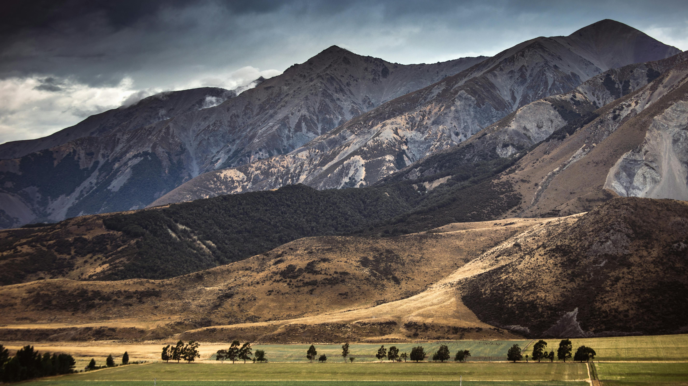
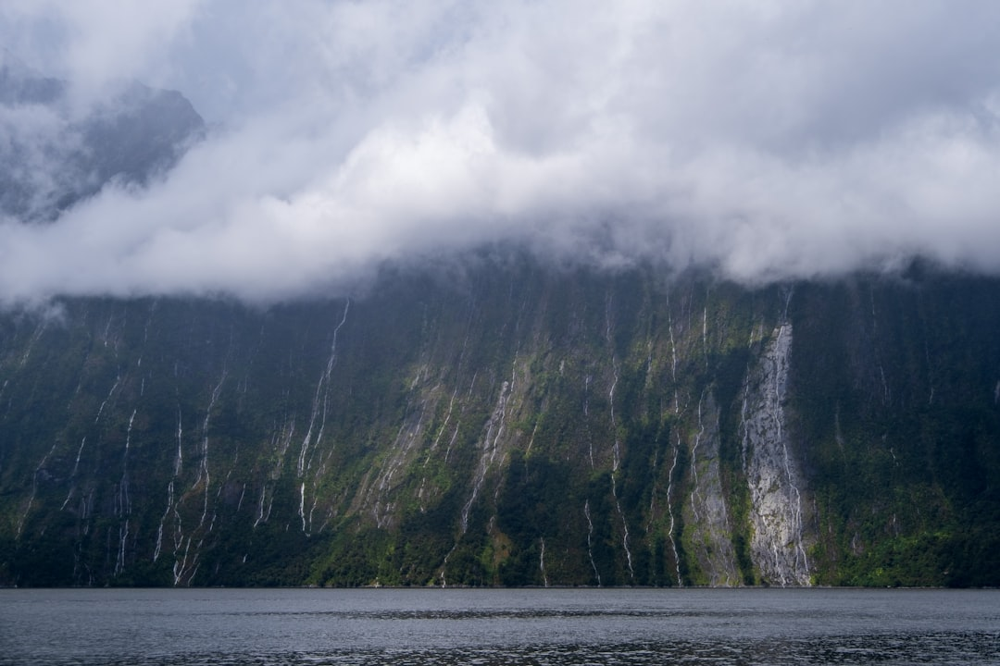
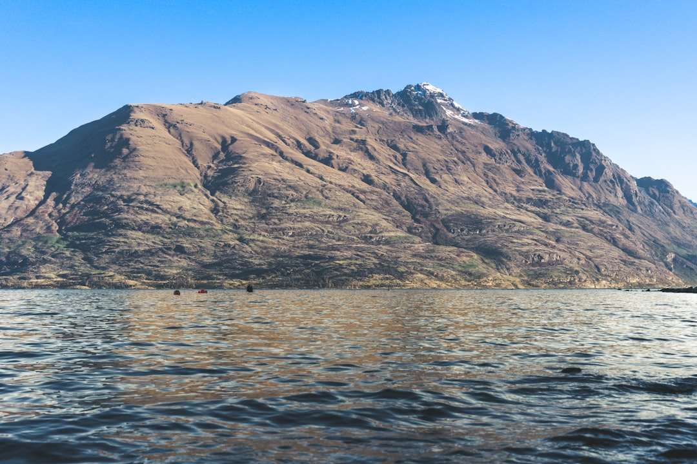
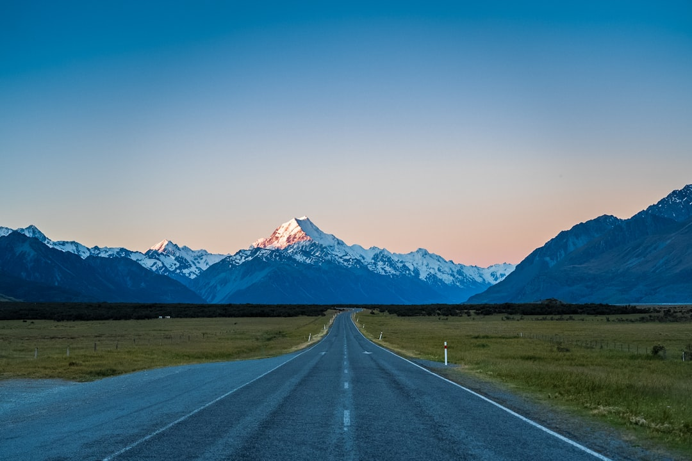
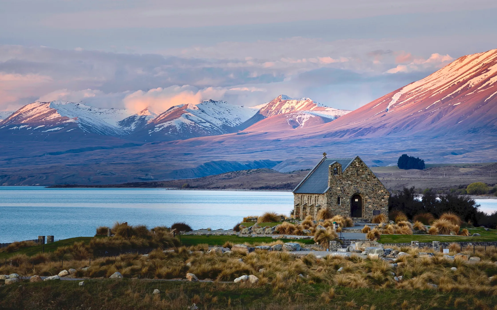
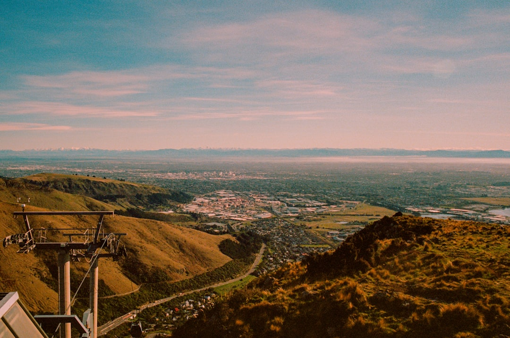
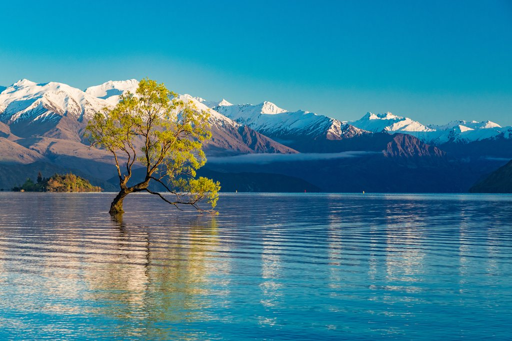

NZ Travel
Discover New Zealand
Discover New Zealand

Experience the majestic Southern Alps, pristine fjords, adventure sports, and the untamed natural beauty of New Zealand's South Island
The South Island, Te Waipounamu in Māori (the waters of greenstone), is where New Zealand's most dramatic landscapes unfold. The Southern Alps form a spine down the island, with glaciers, fjords, and pristine lakes creating some of the world's most spectacular scenery.
Less populated than the North Island, the South Island offers vast wilderness areas, world-renowned hiking trails, adventure sports, and charming towns. From the coastal paradise of Abel Tasman to the soaring peaks of Aoraki/Mount Cook, every corner reveals nature at its most magnificent.
Welcome to South Island. Click on the map to view the detailed route

Located in Fiordland National Park, this is a dramatic fiord carved by glaciers. Even though it's called a "Sound," it is technically a fiord.
Top Highlights: Mitre Peak, which rises spectacularly from the water, and the massive Stirling Falls.
Must-Do: Take a boat cruise to see seals, dolphins, and penguins. It is famously beautiful in the rain because hundreds of temporary waterfalls cascade down the sheer cliffs.
Pro Tip: Most people visit via a long day trip from Queenstown, but staying overnight in nearby Te Anau makes for a much more relaxed experience.

Set against the Southern Alps on the shores of Lake Wakatipu, Queenstown is high-energy and stunningly beautiful.
Top Highlights: The Skyline Gondola for panoramic views and the historic TSS Earnslaw steamship.
Must-Do: If you’re a thrill-seeker, this is the place for bungy jumping, jet boating, or skydiving. For something calmer, visit the nearby gold-rush town of Arrowtown.
Food Tip: You cannot leave without trying a Fergburger, though be prepared to wait in line!

This is New Zealand’s highest mountain (3,724 meters). The national park is a rugged land of ice and rock.
Top Highlights: The Hooker Valley Track, an easy 3-hour return walk that crosses three suspension bridges and ends at a glacial lake filled with icebergs.
Must-Do: Visit the Tasman Glacier, the longest in the country. You can take a boat tour on the terminal lake to touch real icebergs.
The Sky: This area is part of an International Dark Sky Reserve, meaning it has some of the best stargazing on Earth.

Top Highlights: The Church of the Good Shepherd, a tiny stone church that is perhaps the most photographed building in New Zealand.
Must-Do: Drive or hike up to Mount John Observatory for a 360.
view of the Mackenzie Basin. At night, join a professional stargazing tour.
Seasonal Beauty: If you visit between November and January, the lake shores are covered in vibrant pink and purple Lupin flowers.

The largest city on the South Island, Christchurch is a unique blend of English heritage and modern innovation following its rebuild after the 2011 earthquakes.
Top Highlights: The Christchurch Botanic Gardens and the Riverside Market for amazing local food.
Must-Do: Go punting on the Avon River (a guide in traditional dress rows you down the river) or ride the historic vintage tram through the city center.
Vibe: It feels much more "European" than the other spots, with plenty of street art and cool container-style architecture.

This lone willow tree growing out of the water near the town of Wānaka has become one of the most iconic images of New Zealand. It’s a favorite subject for photographers, especially at sunrise and sunset.
Pro Tip: The tree is very popular, so try to visit early in the morning to avoid crowds. You can also take a kayak out on the lake for a unique perspective.
A rental car is highly recommended for the South Island. Distances are greater, and many attractions are remote. The scenic drives are unforgettable.
Summer (December-February) for hiking and water activities. Winter (June-August) for skiing. Autumn offers stunning foliage and fewer crowds.
Respect New Zealand's pristine environment. Stay on marked trails, carry out all rubbish, and never feed wildlife.
Experience New Zealand, redefined. Immerse yourself in breathtaking vistas and a rich cultural tapestry. We’ve curated every detail to help you craft an unforgettable journey through the Land of the Long White Cloud.


{kind=link}
{kind=link}
{kind=link}
{kind=link}
{kind=link}
{kind=link}
{kind=link}